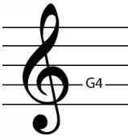

The treble clef is the most common clef, and it is – as we have said – a version of the G-clef. The G clef is drawn so that the curl of the clef wraps around the G4 note. The ‘4’ next to G tells us the register range of that note, which allows us to find this exact note (with the same pitch) in the correct octave on our instrument. In the case of the treble clef, G4 occurs on the second line from the bottom.

Figure 2.3. Treble clef wraps around the G4 note on the 2nd line from bottom to top. Any notes on this line will be G. French clef on the other hand wraps around the G4 on the 1st line from the bottom.
The notes of the treble clef lines, from bottom to top, are:
E4, G4, B4, D5, and F5
And the notes of the spaces between those lines, from bottom to top, are:
F4, A4, C5, E5